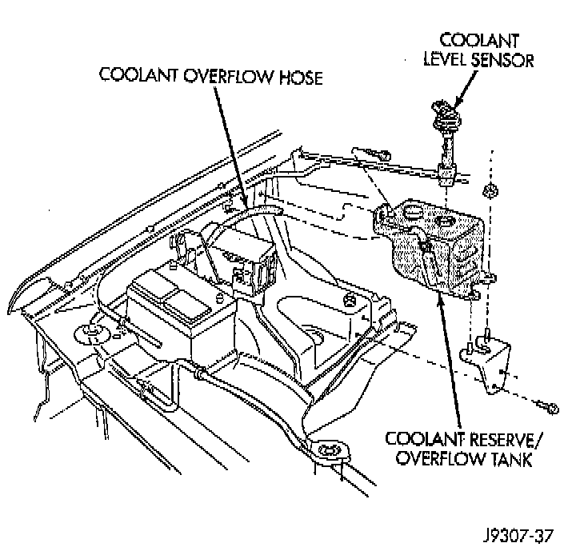

Coolant Reserve/Overflow System

DESCRIPTION
This system works along with the radiator pressure cap. This is done by using thermal expansion and contraction of the coolant to keep the coolant free of trapped air. It provides:
^ A volume for coolant expansion and contraction.
^ A convenient and safe method for checking/adjusting coolant level at atmospheric pressure. This is done without removing the radiator pressure cap.
^ Some reserve coolant to the radiator to cover minor leaks and evaporation or boiling losses.
OPERATION
As the engine cools, a vacuum is formed in the cooling system of both the radiator and engine. Coolant will then be drawn from the coolant tank and returned to a proper level in the radiator.
COMPONENTS
The coolant reserve/overflow system has a radiator mounted pressurized cap, an overflow tube and a plastic coolant reserve/overflow tank mounted to the right inner fender.